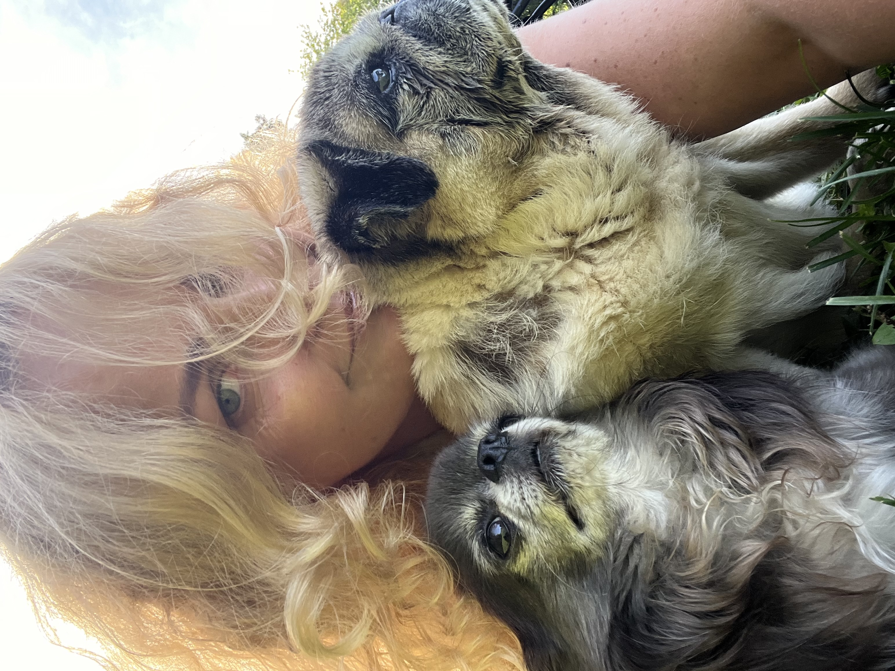
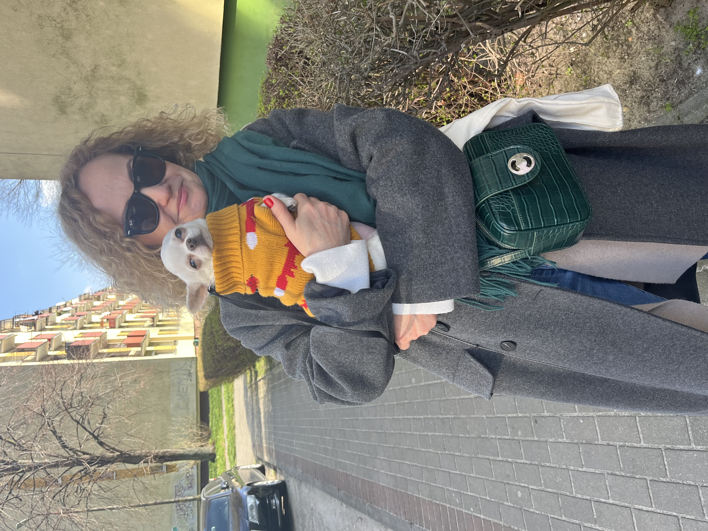
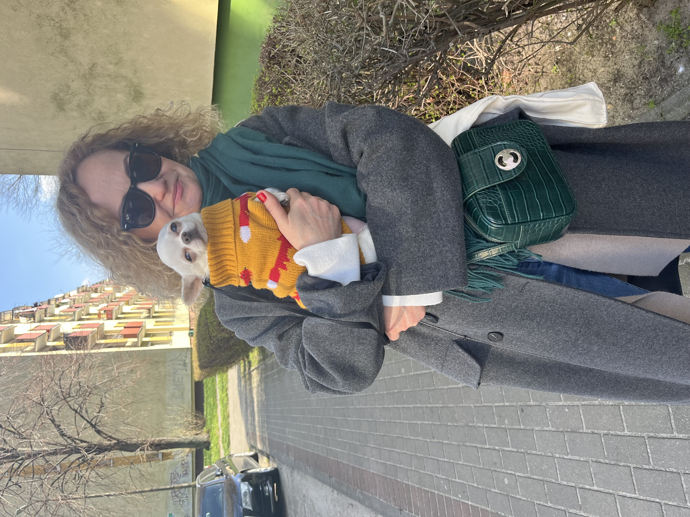
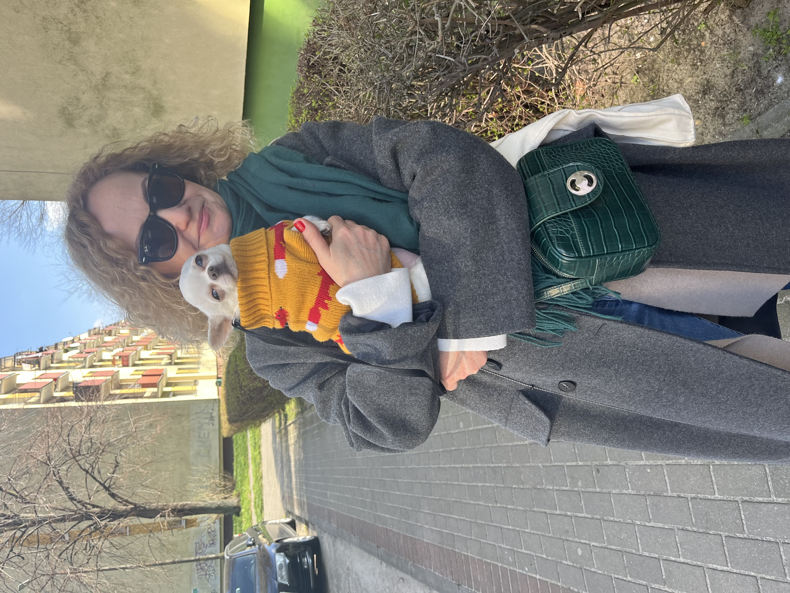
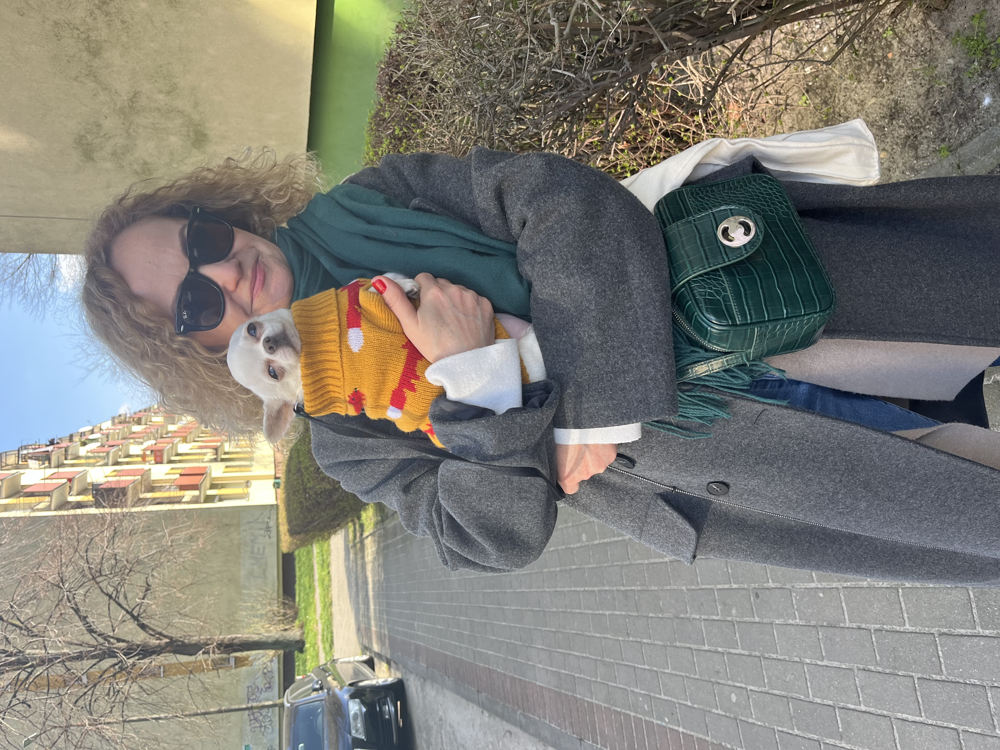

 


Cuddle Bay |

|
My name is Izabela Dec and I am a professional pet sitter and a pet groomer – link. I love and have a lot of respect for all living creatures. I have a special connection with dogs, especially those old ones. I have decided to turn my hobby into a full-time occupation, and this is how Cuddle Bay was born. I want to focus and dedicate my time and heart to our furry, four-legged friends. |
|
|
|
I adopted three dogs, all rescued from illegal breeding: Marzenka the pug, Lusia the pug, and our chihuahua gentleman, Gucio. Sadly, Marzenka and Lusia are now enjoying each other’s company over the rainbow bridge. 🌈 Together with Gucio, we warmly invite you to our cozy, pet-friendly zone at Cuddle Bay in Oslo. Cuddle Bay is not just a place—above all, it is a state of mind, where animals’ well-being and respect are the top priority. 😊 |
Pet care services |
Pet Hotel |
|
|
Cuddle Bay for your loved ones. Small, cozy space with individual approach to each pet. Max 4 pets in care at the same time. I provide pet care at my home, and I dedicate 100% of my time to my pet clients. I am a certified pet sitter from COAPE (Centre of Applied Pet Ethology) - link Safety, respect and a lot of cuddles guaranteed. |